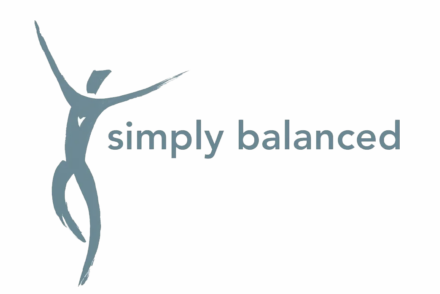

Patient Assessment and Prescription App
Contracted by a physician partnering with Simply Balanced, a movement studio in San Francisco, to build the practice's first patient-facing app as sole designer and developer, translating her clinical protocol into product specs, interface design, and production code. The app administers and scores a nine-assessment battery covering balance, memory, and reaction, used across cognitive and motor conditions, from Parkinson's and age-related cognitive decline to pediatric ADHD and post-concussion recovery. Next comes the prescription engine, which will convert those scores into the movement and exercise plan she currently writes by hand, encoding her decision rules through prompt hill-climbing against past patient cases. A first beta with a group of adolescents launches Fall 2026, testing how younger patients interact with the app and gathering cases to sharpen the engine.